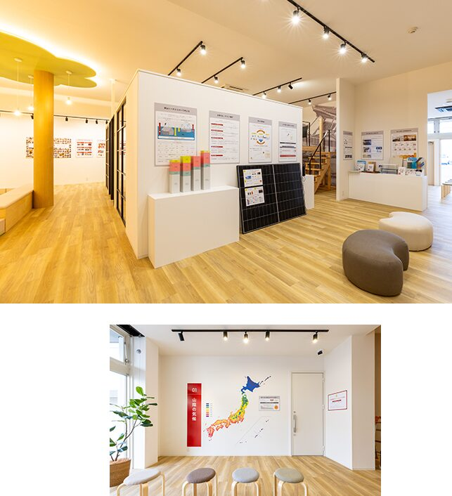
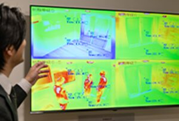
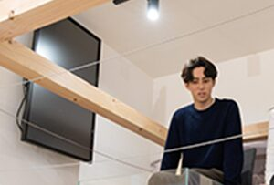
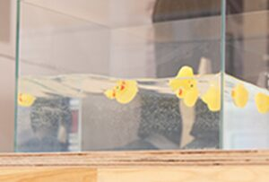
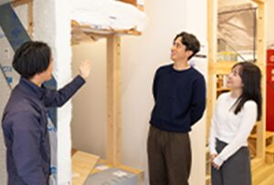
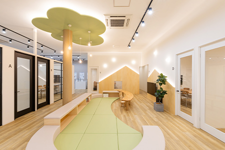
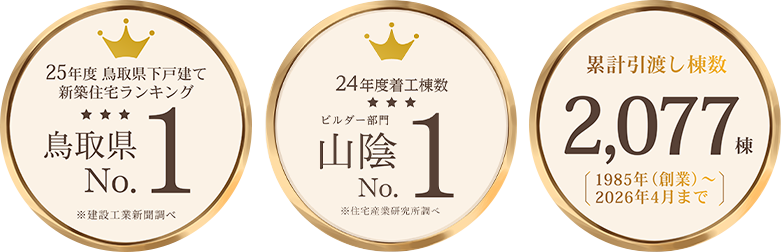

ArtLab体験型住宅展示場
その性能、
体感してから
決めませんか？
完成したら見えなくなる、
家の「中身」を見て・触れて・比べる。
山陰の冬（0〜2℃）を想定した部屋で、
断熱の違いを肌で確かめられます。
来場予約特典QUOカード最大10,000円分
※イラストはイメージです。気温は山陰の冬を想定した体験ブースの設定、室温は体感のイメージです。
YOUR WORRIES
カタログの数字だけで、
家を選んでいませんか？
その答えは、アートラボで「体感」できます。
WHAT'S ArtLab
ブランドや知名度ではなく、
体験して「納得して選ぶ」という選択を。

アートラボは、山陰の気候に合った家づくりを「見て・触れて・体感」できる、アート建工の体験型住宅展示場です。
一般的な住宅展示場が間取りやデザインを見る場所なら、アートラボは“住宅の中身”を確かめる場所。完成後には見えなくなる断熱材や構造、性能の差による室温の違いなど、「住んでから分かること」を、建てる前に体験できます。
| 一般的な住宅展示場 | アートラボ | |
|---|---|---|
| 見るもの | 間取り・デザイン | 断熱・構造・光熱費 |
| 分かること | 完成後の見た目 | 住んでからの快適さ |
| 比べ方 | カタログの数値 | 自分の体で比較 |
EXPERIENCE POINT
アートラボの3つの体感
POINT01
山陰の冬（0〜2℃）から、断熱された室内へ。
びっくり「温度差体験」

0〜2℃の環境から、断熱等級の異なる4つの部屋へ。断熱等級の違いが、体感としてどれくらい変わるのか。山陰の冬に合った断熱性能を、肌で確かめていただけます。
※4部屋の等級の組み合わせは会場により異なる場合があります。要確認
「断熱性能の違いで、こんなに室温が変わるのかと驚きました。快適な空間には、温かさだけではないことも理解できました。」30代ご夫婦
POINT02
構造の違いがわかる
「耐震体感」


耐震に欠かせない地盤の理解や、構造計算・構造躯体の大切さを確認。地震体験装置で実際の揺れを再現し、安心して住み続けられる住宅の構造を体感・納得していただけるコーナーです。
アート建工の標準耐震等級3
POINT03
山陰の暮らしで大きく変わる
「省エネ・トータルコスト」

住宅は建てる費用だけでなく、光熱費や維持費を含めた長い目で考えることが大切です。実際の窓や外壁などに触れて違いを確かめながら、将来の負担を抑える住まいの考え方をご紹介します。

KIDS SPACE
お子さま連れでも、安心して。
打ち合わせスペースからお子さまの様子が見えるので、ご家族のペースでゆっくりご相談いただけます。
EVENT
アートラボ体験会
見学だけでも大歓迎・予約制
スタッフがご案内しながら、3つの体感を順番に回ります。
家づくりを始めたばかりの方も、他社と比べている方も、お気軽にどうぞ。
受付・ご案内
ご予約のお名前を伝えるだけ。手ぶらでOK
温度差体験
0〜2℃の空間から、断熱等級の違う部屋へ
耐震体感
地震体験装置で揺れの違いを体験
省エネ・相談
光熱費の比較や、資金・土地のご相談も
来場予約特典
QUOカード 最大10,000円分プレゼント
※アート建工グループ（アート建工、トコスホーム、マチリブ、リブベース、ココスム、マチリブ不動産）に初めてご来場の、住宅をご検討中のご家族さま1組につき1回限りです。
SANIN STANDARD
体感した性能が、
アート建工の「標準」です。
「山陰スタンダード」は、アート建工グループが独自に定めた鳥取・島根の家づくりの基準です。
冬の寒さ、夏の暑さ、湿気や結露。山陰特有の気候に合わせ、東京大学との共同研究にも取り組みながら、
建てる費用だけでなく、住んでからの光熱費やメンテナンス費まで含めた「トータルコスト」を大切にしています。
※UA値は代表的なプランでの数値です。間取りにより異なります。要確認
RELIABILITY
山陰で選ばれ続けて、40年。

※鳥取県No.1：建設工業新聞調べ（25年度 鳥取県下戸建て新築住宅ランキング）。山陰No.1：住宅産業研究所調べ（24年度着工棟数 ビルダー部門）。
企業信用調査：民間企業信用調査データ（2026年6月時点）。
FAQ
よくあるご質問
一般的な住宅展示場は間取りやデザインを見る場所ですが、アートラボは“住宅の中身”を体感できる施設です。完成後には見えなくなる断熱材や構造、性能の差による室温や快適さの違いなど、「住んでから分かること」を事前に体験できます。
はい。断熱・耐震・構造などを「数字」ではなく、「寒さ」「揺れ」「快適さ」の違いとして体験できるので、初めて家づくりを考える方にも分かりやすい内容です。
はい、キッズスペースがあり、打ち合わせスペースからお子さまの様子が見えます。寒さや揺れの体験は、ご家族で一緒に楽しんでいただけます。
アート建工は「高性能＝高額」ではなく、無駄を省いて本当に必要な性能に投資する考え方を大切にしています。将来の光熱費や快適さまで含めた「トータルコスト」で、体験会の中でご説明します。
いいえ、見学・体験だけでも大歓迎です。他社と比較検討中の方も、ぜひ「比べる材料」としてご活用ください。要確認